Información de San Miguel de Allende
San Miguel de Allende fue fundado en el siglo XVI y ha sido reconocido como Patrimonio Cultural de la Humanidad. Su desarrollo histórico está ligado a la independencia de México, destacando la participación de Ignacio Allende.
La ciudad conserva un estilo colonial único, caracterizado por calles empedradas, arquitectura barroca y una gran variedad de espacios culturales.
Actualmente, es un destino turístico de alto nivel que atrae visitantes nacionales e internacionales, gracias a su calidad de vida, seguridad y oferta cultural.
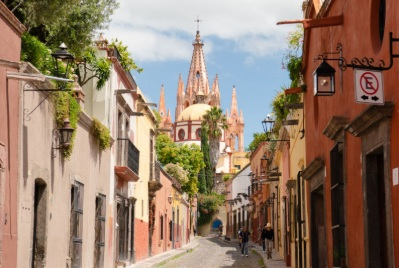
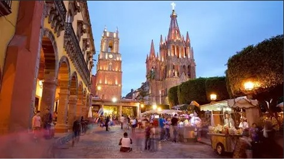
Lugares Turísticos
La Parroquia de San Miguel Arcángel es el símbolo principal de la ciudad, destacando por su diseño neogótico y su relevancia histórica.
El Jardín Principal funciona como el centro social y turístico, rodeado de restaurantes, cafeterías y edificios emblemáticos.
También existen museos, galerías de arte y mercados que enriquecen la experiencia cultural.
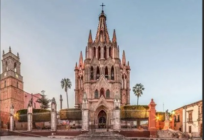
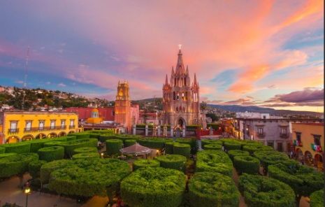
Cultura y Gastronomía
San Miguel de Allende cuenta con una intensa vida cultural, destacando festivales internacionales de arte, cine y música.
En el ámbito gastronómico, ofrece platillos tradicionales como enchiladas mineras, además de una gran variedad de restaurantes contemporáneos.
La mezcla entre tradición y modernidad crea una identidad única.
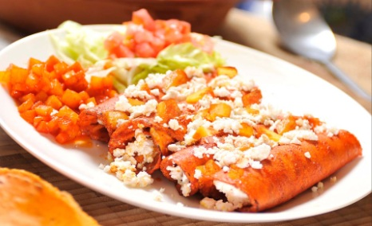
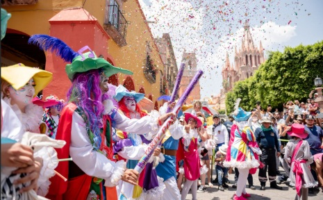
Galería
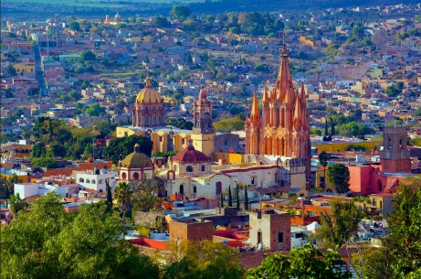
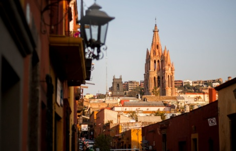
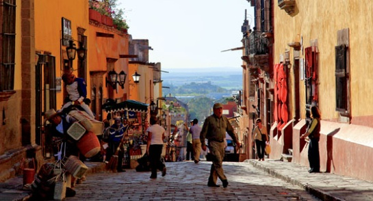
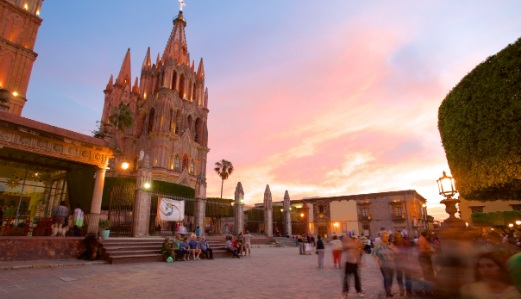
Conclusión y Contacto
San Miguel de Allende representa una combinación perfecta entre historia, cultura y desarrollo turístico, siendo uno de los destinos más importantes de México.
Este proyecto permite comprender la importancia de preservar el patrimonio cultural y su impacto en la sociedad.
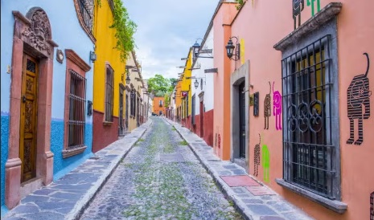
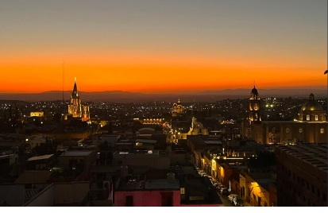